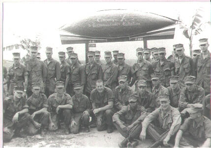
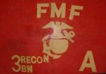
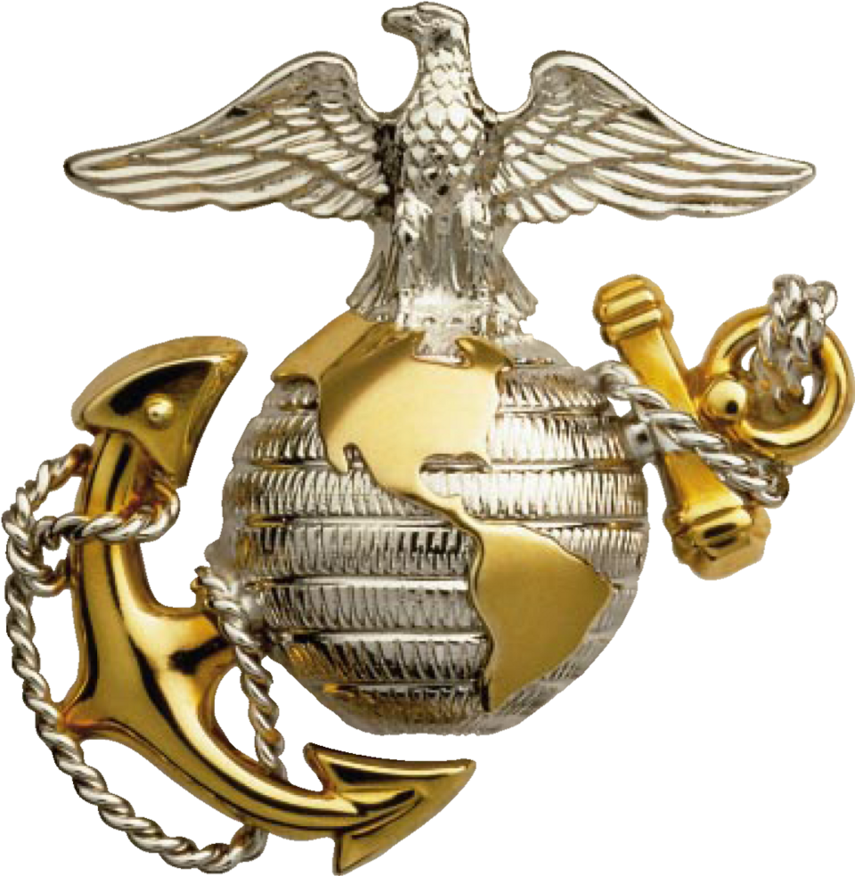

Alpha Company
3rd Reconnaissance Battalion
United States Marine Corps, Vietnam 1965 to 1969
Alpha Company May 1966 at Camp Reasoner




Alpha Company 3rd Reconnaissance Battalion has a very long and honored legacy. Its roots lie with the formation of Company E Scouts, 3rd Tank Battalion, on 16 September1942 as part of the newly created 3rd Marine Division. During W.W.II early 3rd Reconnaissance Marines distinguished themselves at Bougainville, Solomon Islands, Guam, and Iwo Jima. This gallery will honor those Recon Marines from Alpha Company that carried on the traditions of our Founding Fathers during the Vietnam War.
The entire company was deployed in Vietnam from 7 May 1965 until 7 October 1969 however many smaller deployments from the company were in country and offshore as early as 1961. During 1964 Alpha Company was assigned airstrip perimeter duty at Danang during a time of the rapid buildup of U.S. Military Forces in Southeast Asia. Alpha Company was deployed in the areas of Chu Lai, Danang, Phu Bai, Dong Ha, Khe Sanh, and Quang Tri.
During the Vietnam War Alpha Company Marines were awarded one Medal of Honor, five Navy Cross’s, twenty Silver Stars, scores of Bronze Stars, and an unknown number of Purple Hearts that surely total several hundred. Approximately 650 Marines served in Alpha between 1965 and 1969 with 55 Gallant Marines Killed In Action.
Over time this gallery will record our legacy with documents, photographs, personal memories of patrols and operations by those who served, and remembrances in an effort to preserve our history.
If you served with Alpha Company 3rd Recon Battalion during the Vietnam War and you have not heard from us, or if you have not received a mailing in years, we probably lost you somewhere along the way with a bad address. In any event please contact us. Our purpose is to locate everyone who serve and to reunite those that spent the defining times of their lives together.
From the association
Alpha Recon Association Is Granted Tax Exempt Status
IRS 501 C (19) War Veterans Organization
All contributions to the association are fully tax deductible.
We are very appreciative of donations. If you would like to make a donation, information on how to contribute is listed in our Company Office Page listed below. Thank you in advance.
A little housekeeping - please keep in touch with any changes of address, email and phone. I am requesting if your address etc. has changed in the last two years please let us know. We do not want to lose track of you with a bad address return.
I can be reached here george neville.
We have an email distribution list for occasional notices. We do not share this information with anyone. If you would like to be included in this listing send us your email address. For security purposes recipients are blind copied (bcc).
Resolution for Granting Financial Assistance see Company Office for details.
Certificate of Commendation for Recon Marines The Commandant of the Marine Corps General Joseph F Dunford Jr. signed off on a Certificate of Commendation to all reconnaissance units for service in Vietnam. There is no ribbon for this but looks very nice in a frame.

“Call a Recon Brother Once A Month”
Fidelis Certa Merces
(This Latin Phrase Appears on the USMC WW II Honorable Discharge Certificates)
"To The Faithful There Is Just Reward"
This Web Site is maintained by the Alpha Recon Association RVN, a combat Viet-Nam Veterans group that served in Alpha Company 3rd Reconnaissance Battalion, USMC 1965-69.
We hope you enjoy your visit - check back often
Links to more pages (17)
Those That Served Updated 10 Dec 2022
Update on Return of Team Striker
Paul Tobin’s MCL Magazine Article